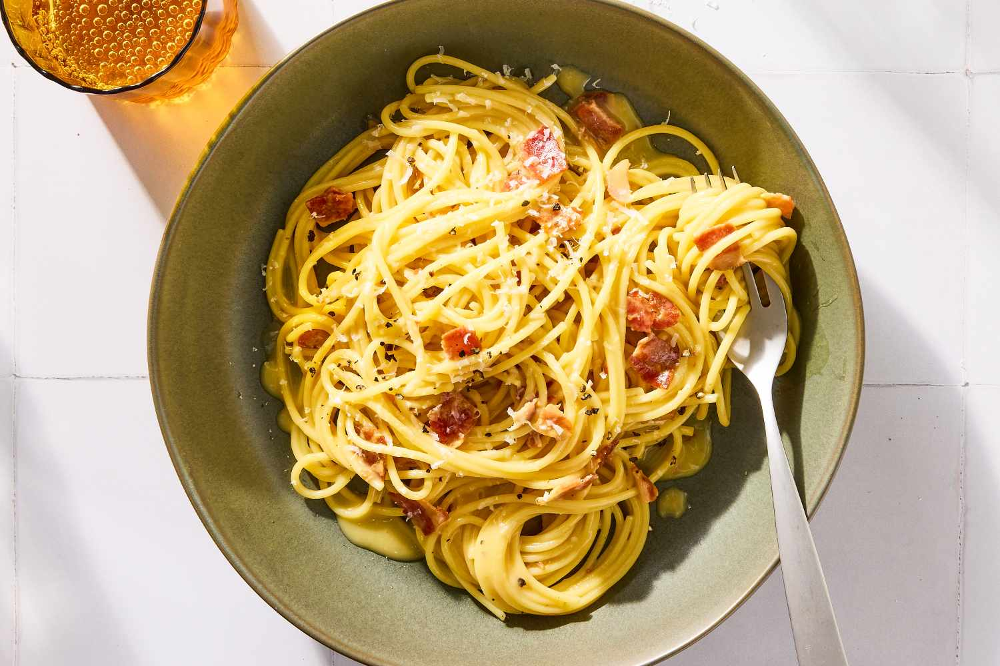

Carbonara
Home
Carbonara is a classic Roman pasta sauce. It is simple in terms of ingredients, but requires some finesse not to scramble the eggs. I finish this in a bain-marie to make it more foolproof and increase the margin for error - as a bain-marie is heated by steam from boiling water, we know it will never receive heat over 100°C, allowing for more gentle, consistent cooking (plus no extra washing up required, as we'll be using a large bowl and a pan of boiling water anyway)

Ingredients:
- 500g Spaghetti
- 8 eggs total - 2 whole eggs, and 6 yolks
- 80g Guanciale, diced into lardons. If no guanciale, use pancetta. If no pancetta, use bacon (just dont tell the Italians) I find the big slabs of polish bacon work really well
- 50g Pecorino (or Parmegianno Regianno/Grana Padano), grated
- Plenty of freshly ground black pepper
Instructions:
- Start the pasta boiling. Try to use as little water as you can - we want the resulting starchy pasta water to be as concentrated as possible
- Start the guanciale frying in extra virgin olive oil on a low/medium heat. We want to render out as much fat as we can, and get the meat chewy. A bit of light crispiness is good but dont make it your goal - lots of people incinerate bacon and it becomes a brittle, textureless mess
- Crack the eggs/egg yolks into a metal bowl (remember, 2 whole, 6 yolks)
- Add pecorino and pepper to the bowl with your eggs and mix to create a paste
- Once pasta is cooked, take off the heat and leave to cool for 2 minutes or so - hot is fine, but adding the pasta/pasta water when its too hot will scramble the eggs. Retain the pasta water
- Once pasta has cooled slightly, gradually add it to the bowl with your egg/cheese paste, along with some pasta water and the guanciale (not too hot or too fast - be wary of scrambling!)
- Put the saucepan of pasta water back on the heat, and put the egg/cheese/pasta bowl on top to create a bain-marie
- Leave on the heat, stirring/tossing continuously, and adding more pasta water from the saucepan below if it ever looks too dry. As the eggs cook, the sauce will thicken, but you should always have a small amount of visible liquid in the bottom of the bowl
- Once sufficiently thickened (earlier than you think - it'll thicken in the bowl), add to a bowl and finish with more cheese and pepper